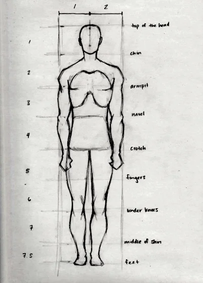
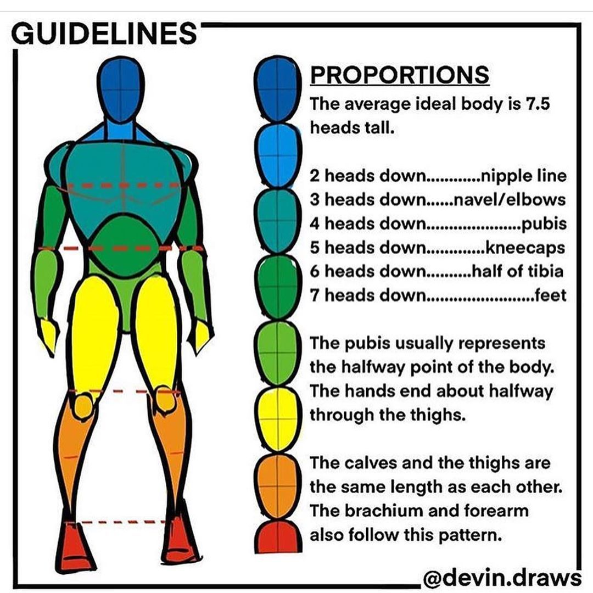
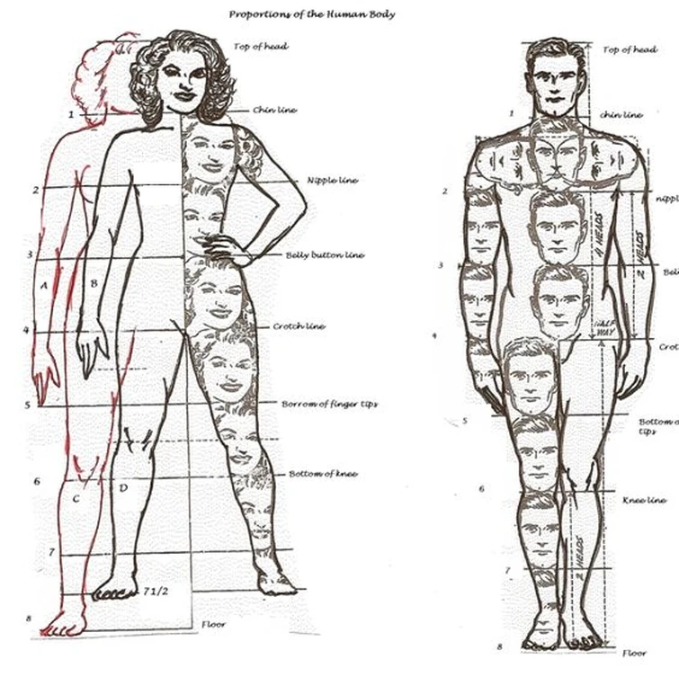
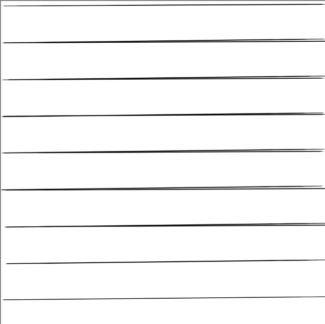
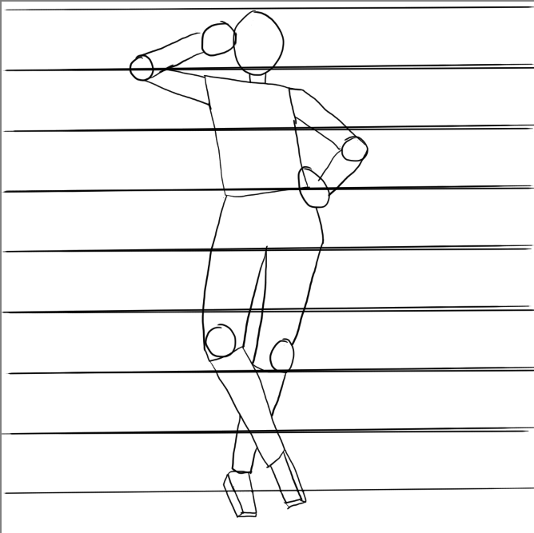

Art Tutorial 1
Date: 2024-7-9 12:00:00
The things you'll need:
A pencil with an eraser, a pen, paper (preferably not lined). Ideally a sketchbook, printer paper will also work. A ruler, a compass (or anything small that can make perfect circles, bottle caps, cups), and lastly a good attitude for learning, since we're all bad when we start.
So you have everything gathered, now what?
First we have to figure out how to hold the pencil before we can even start! You can hold it 2 ways: as close to the base as you can, or as close to touching the eraser. How you hold it will depend on what's currently being drawn.
Another thing to note is that you should NEVER draw dark; you have to draw light so it's easy to erase and draw again. Once things look nice, then you're gonna use a pen.
I repeat, under no circumstances, do you draw dark with the pencil.
Now we can start drawing (for real)
We're gonna learn to draw a person, but we don't "just" draw. We have to learn what actually makes a human. No humans are the same, and when you're drawing something more cartoonic, the scale won't be the same. Even if you plan to draw more of an anime style, learning to draw correct proportions is important.
Learning to scale
In drawing, a body is measured in "heads," with the actual head at the top of the body. Different people will tell you different sizes, but I usually say 7 heads is a good size. Some people say 7.5, others 8. You'll also want to make the body 2 head sizes wide, if it's an even wider body, 2.5 is also good.
As for how big you want the head to be, you want it to be a proper scale for your paper/how big you want it to be. (This is why we have a ruler!) So, if your paper is 8 inches tall, then 1 inch for a head size will give you a 7-inch tall human! This will be a bit tricky if you pose for more than straight on.
Here are some pictures from different sources to help show off what I mean:
  So now we have scale, but how do we actually draw?
An important thing to note is that everything we draw is actually just basic shapes—cones, rectangular prisms, cubes, and so on. For our example, the head will be a circle, and the arms and legs will be cylinders.
Taking all that I said into consideration, here's what I've made to use as my example. You're welcome to use what I have drawn to follow the tutorial, but the tutorial should be detailed enough to follow with any pose. I do not recommend drawing a straight-on image, instead try drawing at an angle, even if slight. But that's up to you.
It's hard to give a proper size on digital, but since I explained how to scale things already, you can use your own scale. Now let's start with drawing. I already have an idea for what I want, and if we follow the charts listed above, the simple shapes will come out perfectly.
What are the extra things added?
For joint sizes, I try for 1/4 size of a head for both width and height. The girl is on her tippy toes, so the number of lines isn't the 7 I usually do, and we can say she's a bit taller than normal. Some people say 6 heads is good for girls' heights, and 7 for guys—but as I said, all body types aren't the same, so feel free to be creative.
A simple way to measure feet is to use two ball joints, one for the joint itself and the other for the rest of the feet. I forgot to show this off.
You'll also notice the head is below the line, which is on purpose for the pose I want to do. Each arm will be one head size (length), so even though it's bent, it's the correct size.
Even if what you've done isn't very good, what you want to focus on is getting the correct proportion sizes over anything else. Everything else will fall into place. Lastly, this is just a rough draft, so don't worry if it's not perfect now.
Practice makes perfect
Don't just do this once and call it a day. You have to practice, do multiple poses, and focus on getting the exact sizes right. The size in my picture won't line up exactly with yours, but the method will still be the same.